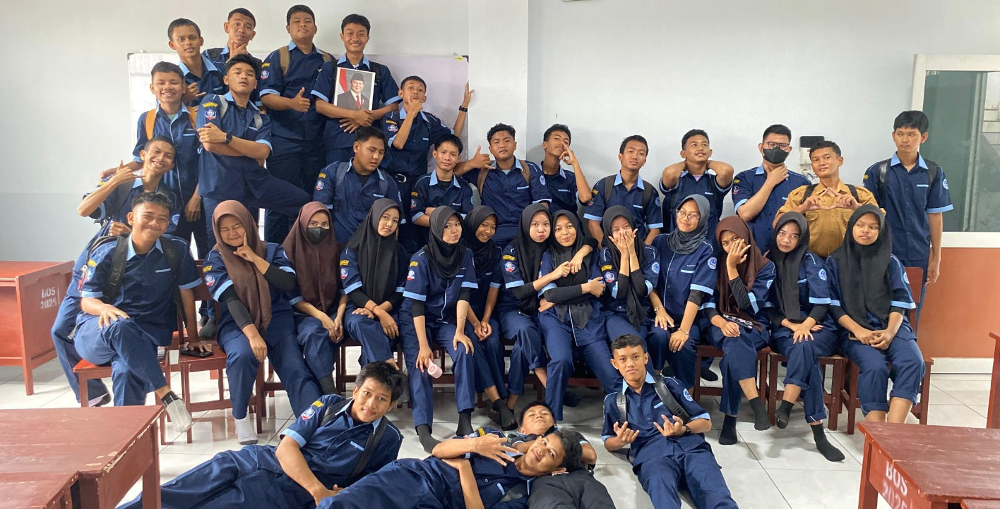

10 Slot Foto
Sekilas dari Perjalanan Sebelumnya
Klik foto untuk melihat versi penuh. (Isi src gambar di kode untuk mengaktifkan.)



Kumpulan momen nyata dari itinerary JalanRasa — supaya kamu tahu persis apa yang akan kamu dapat.
Klik foto untuk melihat versi penuh. (Isi src gambar di kode untuk mengaktifkan.)
